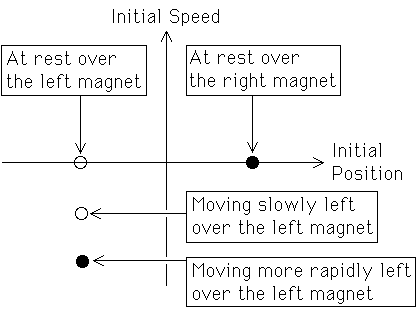

| To visualize the starting positions and speeds from which the pendulum will come to rest over each magnet, we use a phase plane representation. |
| The x-coordinate represents the position of the pendulum, the angle left or right from the vertical (x = 0). |
| The y-coordinate represents the speed of the pendulum. |
| So each point in the phase plane corresponds to a positon and speed of the pendulum. |
|  |
| We paint a point white if, starting from that point (position and speed), the pendulum eventually comes to rest over the left magnet(white circle on the x-axis). |
| We paint a point black if, starting from that point, the pendulum eventually comes to rest over the right magnet (black circle of the x-axis). |
| For example, the white dot just below the x-axis corresponds to starting above the left magnet and moving slowly to the left. As long as the speed is fairly low, and the damping fairly large, the pendulum will rapidly slow down and come to rest over the left magnet. We haven't smacked the pendulum hard enough to make it move very far. |
| The black dot below this white dot corresponds to starting above the left magnet and moving more rapidly to the left. Here the pendulum is moving so rapidly that after it moves left and reverses direction, it crosses the left magnet so rapidly that it continues moving right before coming to rest over the right magnet. |
Return to Mechanical Basin Boundaries.